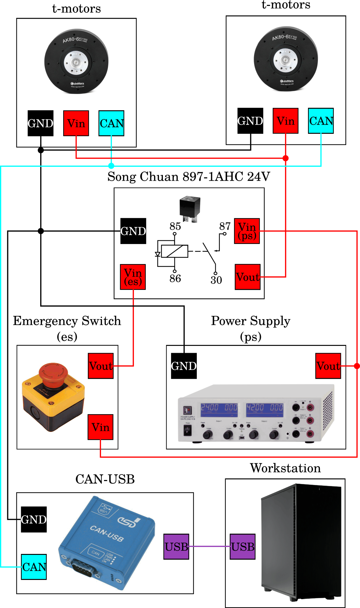

Hardware & Testbench Description
The /hardware directory contains all information about the hardware
that is used to built the double pednulum test bench, including a bill
of materials, step files of the CAD model along with wiring diagrams for
the complete set up as well as the CAN bus.
The documentation here covers assembly instructions and and instructions
for the electrical setup.

Testbench Description
The mechanical design consists of a shoulder motor mounting bracket built with folded aluminum, and two light-weight links which are built with laser cut 1 mm thick sandwich aluminum plates with a laminate of 15 mm PVC rigid foam board (Airex) in between. By using sandwich materials, the weight of the pendulum arms can be kept very low in relation to the drives and the end effector weight. The end of the first link contains the elbow motor housing and the end of second link mounts the weight. Since, the used motors do not provide a hollow shaft, the first link is mechanically extended in the opposite direction to prevent windup of cables.
Assembly Instructions
For the physical assembly of the double pendulum start by mounting the motor mount on a robust horizontal surface (e.g a table). If suffices to fix the motor mount with one or two screw clamps. Make sure that the swinging plane of the double pendulum is free.
Mount the first motor to the motor mount.
Mount the second motor to the end of the first link.
Attach the first link to the mounted motor (to the motor shaft).
Attach the weight fixation to the weight.
Attach the weight to the end of the second link.
Mount the second link to the second motor shaft.
Note
Since the motors do not offer a hollow shaft, the cables (power and can) to the second motor need to come from the front.
Note
If the second link is longer than the first link, the first link needs to be extended in the opposite direction with a U-shaped aluminium piece to prevent windup of cables. The U-shape is attached between the first motor and the first link.
Electrical Setup
Wiring
Note: We do not give any safety warranties on the electrical wiring. All experiments and reproductions of our test bed are at your own risk.
The wiring diagram below shows how the double pendulum testbench is set up. A main PC is connected to a motor controller board (CubeMars_AK_V1.1) mounted on the actuator (AK80-6 from T-Motor). The communication takes place on a CAN bus with a maximum signal frequency of 1Mbit/sec with the ‘classical’ CAN protocol. Furthermore, a USB to CAN interface is needed, if the main pc doesn’t have a PCI CAN card. Two different devices are used in our setup: the R-LINK module from T-Motor and the PCAN-USB adapter from PEAK systems. The former has CAN and UART connectors at the output, but only works with Windows. The latter only features CAN connection, but also works with Linux. The UART connector of the R-LINK module is usefull to configure and calibrate the AK80-6.
The actuator requires an input voltage of \(\small{24\,V}\) and consumes up to \(\small{24\,A}\) under full load. A power supply that is able to deliver both and which is used in our test setup is the EA-PS 9032-40 from Elektro-Automatik. A capacitor filters the backEMF coming from the actuator and therefore protects the power supply from high voltage peaks. This wouldn’t be necessary if the actuator is powered from a battery pack, as in this case backEMF simply recharges the batteries. The capacitor we use is made of 10x single 2.7V-400 F capacitor cells connected in series resulting a total capacity of \(\small{40\,F}\) and is wired in parallel to the motor. A emergency stop button serves as additional safety measure. It disconnects the actuator from power supply and capacitor, if only the power supply gets diconnected the actuator will keep running with the energy stored in the capacitor.
{kind=link}
Fig. 1: actuator = AK80-6, controller board = CubeMars_AK_V1.1, power supply = EA-PS 9032-40, capacitor = 10x 2.7V-400F cells connected in series, USB-CAN interfaces = R-LINK module and PCAN-USB adapter.
backEMF
The reverse current resulting from switching motor speeds from high to low is called backEMF (Electro Magnetic Force). When the motor speed decreases the motor works as a generator, which converts mechanical energy into electrical energy and hence the additional current needs some path to flow. The energy recycled back into the input power supply causes a voltage spike and potential risk. It is necessary to add enough input capacitance to absorb this energy. A sufficiently large input capacitance is important in the desgin of the electric curcuit. It is beneficial to have more bulk capacitance, but the disadvantages are increased cost and physical size.
If the power source were a perfect battery, then energy would flow back into the battery and be recycled. However, in our case the power source is a DC power supply. Especially power supplies with an inverse-polarity protection diode can only source current and cannot sink current, hence the only place the energy can go is into the bulk capacitor. The amount of energy stored in the bulk capacitor can be calculated with
where \(C\) is the capacitance and \(V\) is the voltage. In the case of a Simple Pendulum max. backEMF can be estimated from the kinetic energy of the pendulum
where \(M\) is the mass matrix and \(\dot{vect{q}}\) the angular velocities of the joints. The voltage across the capacitor increases as energy flows into it, so the capacitor should be sized accordingly to the specific application requirements. Nevertheless tuning a capacitor to the acceptable min. capacity is tricky, because it depends on many factors including:
External load
Capacitance of the power supply to source current
Motor braking method, output short brake or current polarity reversing brake.
Amount of parasitic inductance between power supply and motor system, which limits the current change rate from the power supply. The larger the input capacitance, the more stable the motor voltage and higher current can be quickly supplied.
The maximum supply voltage limit and acceptable voltage ripples
If the used capacitor is too small for your specific apllication it introduces the risk of burning the capacitor. The voltage rating for the bulk capacitors should be higher than the typical operating voltage and provide some safty margin. In our case we supply the AK80-6 with \(\small{24\,V}\), whereas the capacitor can take up to \(\small{27\,V}\). Therefore we have \(\small{3\,V}\) buffer, combined with a large capacity of \(\small{40\,F}\), we ensure that during voltage spikes the capacitor never gets fully charged. If you don’t want to buy a huge and expensive capacitor you may instead use a break resistor, which normally is cheaper to purchase. A guidance on this topic is provided here. One drawback using brake resistors is that they quickly heat up, if the motor frequently brakes and regenerates energy. Another option to prevent the bus voltage from spiking too high are resistive shunt regulators, e.g. like this one from polulu, but they can’t dissipate much power and high-power versions also get expensive.